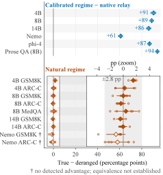

Why it matters왜 중요한가
A benchmark delta tells you the channel helped. It does not tell you the channel communicated.
벤치마크 점수 차이는 채널이 도움이 됐다는 것만 말해준다. 채널이 소통했다는 것은 말해주지 않는다.
Latent communication is not free. It usually demands checkpoint-compatible sender and receiver (or a trained cross-model projector), and it destroys the human-readable transcript that makes a multi-agent system debuggable. Those costs are justified by a specific promise: the relayed cache carries example-specific content the receiver actually uses. But a benchmark gain is compatible with a much cheaper story — that prepending any well-formed cache perturbs the receiver in a generically helpful way. The two are indistinguishable until you intervene on content while holding everything else fixed, which is exactly what nobody had done to the released systems. This audit does it, and the answer splits: the interface effect and the content effect are both real, they are separable, and on standard benchmarks the second one is the smaller of the two.
잠재 통신은 공짜가 아니다. 보통 송신자와 수신자가 같은 체크포인트여야 하고(아니면 학습된 크로스모델 프로젝터가 필요하고), 멀티에이전트 시스템을 디버깅 가능하게 만들어주던 사람이 읽을 수 있는 기록도 사라진다. 이 비용은 특정한 약속으로 정당화된다. 전달된 캐시가 수신자가 실제로 쓰는 예제별 내용을 담고 있다는 약속이다. 하지만 벤치마크 향상은 훨씬 값싼 설명과도 양립한다. 아무 잘 만들어진 캐시나 앞에 붙이기만 해도 수신자가 일반적으로 유익한 방향으로 흔들린다는 설명 말이다. 다른 모든 걸 고정한 채 내용에만 개입하기 전까지 이 둘은 구별되지 않고, 정확히 그것이 출시된 시스템들에 대해 아무도 하지 않은 일이었다. 이 감사는 그걸 하고, 답은 둘로 갈린다. 인터페이스 효과와 내용 효과는 둘 다 실재하고, 분리 가능하며, 표준 벤치마크에서는 후자가 더 작다.

By the numbers핵심 숫자
The channel works — when it has to채널은 작동한다 — 작동해야만 할 때
| Family | True | Intact | Deranged | Zero | T−D |
|---|---|---|---|---|---|
| Qwen3-4B | 498/499/498 | 116/105/120 | 42/55/37 | 20/17/18 | +90.7 |
| Qwen3-8B | 500/500/500 | 126/122/117 | 53/60/53 | 8/11/8 | +88.9 |
| Qwen3-14B | 500/500/499 | 110/114/117 | 62/68/75 | 47/43/50 | +86.3 |
| Mistral-Nemo-12B | 425/431/420 | 108/125/129 | 115/124/123 | 0/0/0 | +60.9 |
| phi-4 | 499/500/500 | 110/125/118 | 64/63/67 | 0/0/0 | +87.0 |
In one diagram한 장의 그림
The idea: intervene on content, not on the channel아이디어: 채널이 아니라 내용에 개입하라
True minus deranged
The pairing effect τTD is the accuracy gap between a receiver given its own example's cache and one given a batch-mate's. Because the deranged arm ships the same multiset of caches — merely re-paired — any gap cannot be blamed on malformedness or distribution shift. It isolates exactly the quantity the “latent thoughts” attribution needs, and nothing else.
페어링 효과 τTD는 자기 예제의 캐시를 받은 수신자와 같은 배치 동료의 캐시를 받은 수신자 사이의 정확도 차이다. deranged arm은 동일한 캐시 다중집합을 그대로 보내고 짝만 다시 맺기 때문에, 어떤 차이도 캐시가 망가졌다거나 분포가 달라졌다는 탓으로 돌릴 수 없다. “잠재 생각” 주장이 필요로 하는 바로 그 양만을, 다른 것 없이 분리해낸다.
Zero, random, intact-no-private
Three more arms decompose the rest. Zero and moment-matched random caches confirm the intervention point is causally wired to the receiver at all — random collapses accuracy to ≤2/500, so a null elsewhere is not a dead instrument. Intact-no-private lets the sender compute normally but strips the answer-relevant secret, separating the value of sender computation from the value of sender knowledge.
나머지는 세 개의 arm이 분해한다. Zero와 모멘트를 맞춘 random 캐시는 개입 지점이 애초에 수신자와 인과적으로 연결돼 있음을 확인해준다. random은 정확도를 500분의 2 이하로 무너뜨리므로, 다른 곳에서 나온 귀무 결과가 죽은 계측기 탓이 아니게 된다. Intact-no-private는 송신자를 정상적으로 돌리되 정답과 관련된 비밀만 걷어내, 송신자 계산의 가치와 송신자 지식의 가치를 갈라놓는다.
Manufactured receiver necessity
A null is ambiguous: the channel may have failed, or the receiver may simply not have needed the content. So the audit builds a regime where necessity is guaranteed — procedurally generated entity-attribute registries, resampled per evaluation, absent from any training corpus. If the pairing effect is at ceiling there and near zero on GSM8K, the channel is fine and the benchmark was the redundant part.
귀무 결과는 중의적이다. 채널이 실패했을 수도 있고, 수신자가 애초에 그 내용을 필요로 하지 않았을 수도 있다. 그래서 감사는 필요성이 보장되는 체제를 만든다. 절차적으로 생성되고 평가마다 새로 뽑히는, 어떤 학습 코퍼스에도 없는 개체-속성 레지스트리다. 페어링 효과가 거기서 천장이고 GSM8K에서 0에 가깝다면, 채널은 멀쩡하고 중복이었던 쪽은 벤치마크다.
How it works어떻게 작동하나
- Intervene at the relay boundary. 릴레이 경계에서 개입한다. In LatentMAS the sender's layer-wise KV cache is prepended to the receiver's. The audit replaces that tensor in flight, leaving layer count, sequence length and dtype untouched, so any accuracy difference is attributable to content alone.LatentMAS에서는 송신자의 레이어별 KV 캐시가 수신자 캐시 앞에 붙는다. 감사는 그 텐서를 중간에서 갈아끼우되 레이어 수, 시퀀스 길이, dtype은 건드리지 않는다. 그래서 정확도 차이는 오직 내용 탓이 된다.
- Derange within the batch. 배치 안에서 어긋낸다. A fixed-point-free permutation over a 25×20 batch geometry guarantees no example receives its own cache while the delivered distribution is unchanged. n=500 per arm per seed, three to five seeds, with the seed as the unit of inference.25×20 배치 기하 위의 고정점 없는 순열은 어떤 예제도 자기 캐시를 받지 않도록 보장하면서 전달되는 분포는 그대로 둔다. arm·시드당 n=500, 시드는 3~5개, 추론 단위는 시드다.
- Calibrate the instrument first. 계측기부터 보정한다. Run the battery where the receiver provably cannot answer without the sender's registry. True hits 100% on Qwen3-8B against ~23–25% for answer-irrelevant relays, and deranged receivers answer with the donor's registry 64.2–64.8% of the time — they are demonstrably reading the cache.수신자가 송신자의 레지스트리 없이는 증명 가능하게 답할 수 없는 조건에서 전체 arm을 돌린다. Qwen3-8B에서 true는 100%, 정답과 무관한 릴레이는 약 23~25%다. 그리고 deranged 수신자는 64.2~64.8%의 비율로 기증자의 레지스트리로 답한다. 캐시를 읽고 있다는 게 증명되는 셈이다.
- Then test for equivalence, not significance. 그다음 유의성이 아니라 동등성을 검정한다. On GSM8K, ARC-Challenge and MedQA, two one-sided tests bound τTD inside ±2.8 points — a margin anchored to the audited system's own reported aggregate gain, so the null is a quantitative bound on the claim rather than a failure to reject.GSM8K, ARC-Challenge, MedQA에서 two one-sided test로 τTD를 ±2.8점 이내로 묶는다. 이 마진은 감사 대상 시스템이 스스로 보고한 총 향상폭에 앵커돼 있어서, 귀무 결과가 기각 실패가 아니라 그 주장에 대한 정량적 경계가 된다.
- Port the same test to other channels. 같은 시험을 다른 채널로 이식한다. Under identical receiver necessity, C2C's released cross-model projector shows sign-mixed pairing contrasts (+2.0/+0.6/−1.8) despite a large total cache effect, while KVComm's 11-layer relay recovers a real but modest +10.8/+7.2/+9.0 — roughly a tenth of the native relay's ceiling.동일한 수신자 필요성 아래에서, C2C의 출시된 크로스모델 프로젝터는 총 캐시 효과가 큰데도 페어링 대비가 부호마저 섞인다(+2.0/+0.6/−1.8). 반면 KVComm의 11개 레이어 릴레이는 실재하지만 소박한 +10.8/+7.2/+9.0을 회복한다. 네이티브 릴레이 천장의 대략 10분의 1이다.
What to take away그래서, 가져갈 것
Spend latent bandwidth where information asymmetry is real. If your receiver could have answered alone, you are buying an interface effect at the price of debuggability and checkpoint coupling — and you could likely get the same effect from a cheaper prefix.
정보 비대칭이 실제로 존재하는 곳에 잠재 대역폭을 써라. 수신자가 혼자서도 답할 수 있었다면, 디버깅 가능성과 체크포인트 결합이라는 값을 치르고 인터페이스 효과를 사는 셈이다. 게다가 그 효과는 더 싼 prefix로도 얻을 수 있을 공산이 크다.
“Our agents exchange latent thoughts” is a causal claim, and a benchmark delta does not establish it. Three released systems pass the benchmark test and then split three ways — ceiling, partial, undetected — on the question of whether example-specific content moves at all.
“우리 에이전트들은 잠재 생각을 주고받는다”는 인과 주장이고, 벤치마크 점수 차이는 그걸 입증하지 못한다. 출시된 세 시스템은 벤치마크 시험을 통과한 뒤, 예제별 내용이 애초에 이동하기는 하느냐는 질문에서 천장·부분·미검출 셋으로 갈라진다.
The mismatched-content control belongs in every latent-communication paper, and equivalence testing belongs with it. Reporting “no significant difference” is not the same as bounding the effect inside a margin you committed to in advance.
짝이 어긋난 내용 대조군은 모든 잠재 통신 논문에 들어가야 하고, 동등성 검정도 함께 가야 한다. “유의한 차이 없음”을 보고하는 것은 미리 약속한 마진 안으로 효과를 묶어내는 것과 같지 않다.